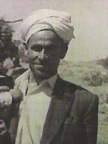

Molla Sadreddin Yüksel [1920-2004]

Aslen Bitlis’in Adilcevaz Ýlçesinin Koçeri (Bugünkü Erikbaðý) Köyünden olup, ailesi Kürtlerin Haydaran Aþiretinden gelmektedir. Babasý Tahir Efendi (Vefatý:1927) Haydaran aþiretinin Asiyan kolundan, Annesi Hatun Haným ise (vefatý:1985) ayný aþiretin Marhuran kolundandýr. Dedesi Ali Aða Birinci Dünya Savaþý sýrasýnda Kafkas Cephesinde þehit düþer. Cihan Harbi esnasýnda Rus ordularýnýn Ermeni çeteleriyle birlikte Adilcevaz ve çevresine tasallutu dolayýsýyle Tahir Efendi bir kýsým akrabalarýyla birlikte memleketini terk eder ve Konya’nýn Sarayönü kazasýna gelip yerleþir.Sadreddin Yüksel 1336/1920 tarihinde Sarayönü ilçesinde doðar. Doðumundan sonra ebeveyni tarafýndan Konya’nýn merkezine, Þeyh Sadreddin Konevî Camiine götürülür. Bu camide postniþîn olan bir þeyh tarafýndan kendisine ‘Sadreddin’ adý verilir. Kýsa bir süre sonra, mütareke döneminin ardýndan memlekete, Koçeri köyüne dönülür. Ayný köyde, Hamidiye alaylarý paþalarýndan ve ayný aþiretten, ünlü Haydaranlý Kör Hüseyin Paþa da bulunuyordu. Ailesi, bu paþanýn maiyyetinde bir aile, dolayýsýyle Paþa’nýn çocuklarýyla birlikte büyür.
Henüz yedi yaþýnda iken babasý Tahir Efendi hastalanarak Adilcevaz’ýn Arin köyünde (bugünkü Göldüzü Köyü) genç yaþta vefat eder. Vasiyeti üzerine cenazesi Koçeri Köyünde defnedilir. Bir yýl sonra da -1928’de- Hüseyin Paþa namaz kýlarken, kendisinin eski adamlarýndan ve Huyti Aþireti Reisi Hacý Musa Bey’in oðlu Medeni Bey tarafýndan öldürülünce aile himayesiz kalýr.
11-12 yaþlarýnda okumak üzere ailesinden ayrýlýp Kur’an-ý Kerîm’i hatmeder. Bir medresede çeþitli Kürdçe kitaplar okuduktan sonra, Arapça tedrisata baþlar. Ýlkin, Muþ’un Bulanýk ilçesinin Purkaþin Köyünde Molla Zübeyr’in yanýnda biraz sarf-nahiv okur. Sonra, Resulan Ve Koðak Köylerinde okumaya devam eder. 1934 yýlýnda Bitlis’in Norþin Nahiyesine (bugünkü Güroymak Ýlçesi) gider. Burada, ünlü Kürd Nakþibendi-Halidî meþayihinden Þeyh Abdurrahman Et-Tahî’nin medresesine girer. Bu sýrada, medrese, adý geçen Þeyh Abdurrahman Et-Tahî’nin torunu Þeyh Ma’sum tarafýndan idare edilmektedir. Bu medresede Þeyh Takiyuddin ve Molla Abdülbâkî’nin yanýnda okur.
Daha sonra, Norþin Medresesine baðlý, Mutki’nin Ohin (Þimdiki Yukarý Koyunlu) Köyündeki medrese’ye giderek, burada, medresenin sahibi ve Þeyh Fethullah el-Verkanisî’nin (Vefatý:1317/1899) oðlu Þeyh Alauddin Efendi (Vefatý:1949) ve onun oðlu Mazhar (Vefatý:1988) Efendi’nin yanýnda tedrisata devam eder. Ve Þeyh Alauddîn Efendi’den el alarak Nakþibendi tarikatýna intisab eder. Daha sonra Baykan ilçesinin Havil köyüne gidip Molla Muhyiddin Efendi’nin (Vefatý:1988) yanýnda tedrisatýný tamamlar. Bundan sonra Norþin’e dönüp burada ders vermeyi, talebe yetiþtirmeyi sürdürür. 1947 yýlýnda Þam’a gitmek ister. Þeyh Ma’sum’un oðlu Þeyh Ma’þuk Efendi (Vefatý:1975) ile Suriye’ye bir seyahatte bulunur. Burada, Þeyh Ma’þuk Efendi’nin þeyhi ve Þeyh Muhammed Ziyauddîn Efendi’nin hulefasýndan Þeyh Ahmed El-Haznevî’yi (Vefatý:1950) ziyaret eder. O sýrada Þam’da bulunan Þeyh Muhammed Ýsa’nýn isteðiyle Þam’a gidip yerleþmek istese de Þeyh Ma’sum gitmesini istemediðinden vazgeçerek Norþinde medrese hocalýðý yapmaya devam eder. Bu sýralarda, 1945 yýlýnda Bediüzzaman’la tanýþýp mektuplaþmaya baþlar. 1952 yýlýnda ise birkaç kez bizzat Emirdað’da kendisini ziyaret eder.
Þeyh Ma’sum Efendi onu kendisine damat olarak seçer. Ve 1951 yýlýnda Þeyh Ma’sum’un kýzý Sarete ile evlenir. 1955 yýlýnda mecbur kaldýðýndan askere gitmek durumunda kalýr ve Menemen’de baþladýðý askerliðini Ankara’da tamamlar. Askerlik dolayýsýyla Ankara’da iken, bazý subaylar kendisinden Arapça dersler alýp, yanýnda okurlar. Bunun yaný sýra Diyanet Teþkilatý ile de irtibat saðlayýp, kendisine teþkilattan fetvalar sorulmaktadýr.
1958 yýlýnda, Ankara’da Müftülük imtihanýna girer. O sýrada Diyanet Ýþleri Reisi olan Eyüp Sabri Hayýrlýoðlu tarafýndan imtihan edilir. Müftülük imtihanýnda birinci olarak Siirt’in Baykan ilçesi müftülüðüne tayin edilir. Ayný yýl Bediüzzaman’ýn talimatýyla, Ýþaratu’l-Ý’caz tefsirini yayýna hazýrlayýp bir takriz ile birlikte Ankara’da yayýnlar. Fakat kýsa bir süre sonra müftülük görevinden istifa edip Norþin’e dönüp ders vermeye devam eder. 1960 yýlýnda, Muþ’un Bulanýk ilçesinin Neynik köyüne taþýnýp burada fahri imamlýk yapar.
1962 yýlýnda ise yine Bulanýk ilçesinin Liz Nahiyesine (bugünkü Erentepe beldesi) taþýnarak burada da fahri imamlýða devam eder. 1963 yýlýnda ise, Ýstanbul’a gelir. Ýstanbul ile memleketi arasýnda gidip gelir. Bu sýrada, Ýstanbul’da neþredilen haftalýk Yeni Ýstiklâl gazetesinde yazýlar yazmaya baþlar.
1964 yýlýnda Diyanet Ýþleri Reisliði tarafýndan Kur’an-ý Kerim meâl ve tefsiri hazýrlamakla görevlendirilir. Fakat bu proje sonradan yarým kalýr. 1966 yýlý sonunda ise, ailesini alarak Ýstanbul’a taþýnýr. Sultan Ahmed Camii imamý Merhum Gönenli Mehmed Efendi’nin (Vefatý:1991) kurslarýnda ve Ýsmail Aða Kur’an Kursunda talebelere Arapça Ýslâmî ilimler okutur. Bu tarihlerde, Sultan Ahmed Camii eski imamlarýndan, Þeyh Muhammed Þefik Arvasi’den teberrüken ilim icâzeti almýþtýr.
1968 yýlýnda ise, Diyanet Ýþleri Baþkanlýðýnca Ýstanbul Merkez vaizliðine tayin edilir. Bu arada, Ýstanbul müftülüðü ile Yüksek Ýslam Enstitüsü’nde Tefsir dersleri vermeye baþlar. Bu sýralarda, günlük Bugün gazetesinde yazý yazmayý da sürdürür.
1972 yýlýnda, evinde Risale-i Nur külliyatý bulundurmaktan takibata uðrayýp mahkemeye sevkedilir. 1975 yýlýnda ise, o sýrada Ýstanbul müftüsü olan Abdurrahman Þeref Güzelyazýcý’nýn kendisine olumsuz bir tavýr takýnmasýndan dolayý Ýstanbul merkez vâizliðinden istifa etmek durumunda kalýr. Yeniden çok sevdiði tedrisata döner. 1996 yýlýnda gözlerinde arýz olan damar hastalýðýnýn artýp, tedrise engel olmasýna kadar tedrisata devam eder. Bu dönemde, çeþitli usûl, fýkýh, tefsir, kelam, siyer ve mantýk kitaplarýyla, Sarf ve Nahiv kitaplarý okutur. Bunlarýn yaný sýra, Mevlâna Celâleddîn-i Rumi’nin Mesnevisi, Sa’di’nin Gülistan’ý, Molla Cami’nin Divâný ve Baharistan’ý, Ýbn Fârýz Divâný, Hafýz Divâný, Mevlâna Halid-i Baðdadî’nin Divâný, Birgivî’nin Tarikat-ý Muhammediye’si gibi önemli eserleri de okutur. Ayrýca, Bediüzzaman’ýn, Ýþaratu’l-Ý’caz Fi Mezani’l-Ýcâz adlý tefsiri, Mesnevi-yi Nuriye ve mantýk üzerine yazdýðý Kýzýl Ýcâz adlý eserlerini de okutur. 7 çocuk babasý olup, Kürdçe ve Türkçenin yanýsýra Arapça ve Farsça bilmekteydi. 13 Zilhicce 1425/25 Aralýk 2004 Tarihinde bir Cumartesi günü sabah saat 10:30 civarýnda evinde vefat eder.
Eserleri:
Dinî Ve Ýlmî Ýncelemeler, 1969, Ötüken Yayýnlarý, Ýstanbul
Asrî Kâmus, Arapça-Türkçe Lügat, 1973, Hilâl Yayýnlarý, Ýstanbul
Ýctihad-Taklid Ve Telfik Risalesi ( Muhammed Abduh, Reþid Rýza Ve Hayreddin Karaman’a Reddiye), 1975, Fazilet Neþriyat Ýstanbul
Prof. Muhammed Hamidullah’ýn Ýslâm Peygamberi ve Muhammed Resulullah Adlý Eserlerine Reddiye, 1975, Fazilet Neþriyat, Ýstanbul
Mevlâna Halid-i Baðdâdî’nin Divaný Ve Þerhi, 1977, Sabah Kültür Yayýnlarý, Ýstanbul
Ýslâmî Araþtýrmalar, 1982 Tûba Yayýnlarý, Ýstanbul
Ýslâmî Açýdan Lâiklik, 1983, Tahran-Ýran
Makaleler-I, 1985, Madve Yayýnlarý, Ýstanbul
Makaleler-II, 1987, Madve Yayýnlarý, Ýstanbul,
Günümüz Meselelerine Kur’an’dan Cevaplar, Makaleler-III, 1988, Madve Yayýnlarý, Ýstanbul
Makaleler-IV, 1990, Madve Yayýnlarý, Ýstanbul.
Ýslamî Araþtýrmalar, Ýkinci Baský, 1992, Madve Yayýnlarý, Ýstanbul
Makaleler-V, 1993, Madve Yayýnlarý, Ýstanbul
Arapça Eserleri:
Þerhu’l-Elðâz, (Bahauddîn ‘Amilî’nin “Keþkul” adlý kitabýndaki Lüðazlar üzerine Þerh), 1983, Þamil Yayýnevi, Ýstanbul.
Risâletun Fi Þe’ni’l-Cum’ati, (Cum’a Namazý Üzerine) 1983, Ýstanbul.
Haþiyetu ‘Ala Þarhi’s-Sudûr Fi Þerhi Hâli’l-Mevta Fi’l-Kubûr, (Ýmam Celaluddîn ‘Abdurrahman Es-Suyûtî’nin (Vefatý:911/1505), Kabir Alemi ile alakalý kitabýna Haþiye), 1985, Kahraman Yayýnlarý, Ýstanbul
Haþiye ‘Ala Tefsiri Ýþârâti’l-Ý’caz Fi Mezani’l-Ýcâz (Bediüzzaman’ýn Ýþaratu’l-Ý’caz adlý Tefsirine Haþiye), 1988, Med-Zehra Yayýnlarý, Ýstanbul
Þerhu Ýsa Ðoci, (Molla Halil El-Es’ardî’nin (Vefatý:1257/1841) Ýsa Goci adlý Mantýk kitabýna Þerh), 1988, Teblið Yayýnlarý, Ýstanbul.
Tahkîk Ve Haþiya ‘Ala Mecelleti’l-Ahkâmi’l-‘Adliyye (Mecelle-i Ahkâm-ý Adliyye’nin Arapça Nüshasý üzerine Tahkik Ve Haþiyeler; Yayýnlanmamýþtýr.)
Haþiyetu ‘Ala Divâni Ýbn Fârid (Ýbn Farýz Divaný’na Haþiye), yayýnlanmamýþtýr.
Ta’likât ‘Ala Haþiyeti Kýzýl Ýcâz Fi ‘Ýlmi’l-Mantik (Bediüzzaman’ýn Ahdarî’ye ait Süllem adlý manzum mantýk kitabý üzerine Kýzýl Ýcâz adýyla yazýp yayýnladýðý, Haþiyesi üzerine geniþ bir Ta’likat; Müfid Yüksel tarafýndan yayýna hazýrlanmýþ olup, yayýnlanma aþamasýndadýr)
Makalelerinin Yayýnlandýðý Gazeteler:
Yeni Ýstiklâl (Haftalýk Gazete, 1961-66 yýllarý arasýnda Mehmed Þevket Eygi Tarafýndan yayýnlanmýþtýr.)
Bugün (Günlük Gazete, 1966-1971 yýllarý arasýnda yayýnlanmýþtýr)
Sabah (Günlük Gazete, 1981 yýlýna kadar yayýnýný sürdürmüþtür.)
Ufuk (Haftalýk Gazete)
Büyük Gazete (Haftalýk, 1976-1980 yýllarý arasýnda Mehmet Þevket Eygi tarafýndan yayýnlanmýþtýr)
Yeni Asya (Günlük Gazete)
Milli Gazete
Aylýk Dergiler:
Hilâl (Salih Özcan Tarafýndan çýkarýlan aylýk Dergi)
Ýmza (1989-1994 yýllarý arasýnda yayýnlanmýþtýr)
Giriþim vs.
Hazýrlayan: Müfid YÜKSEL (Kaynak: Cevaplar.org)